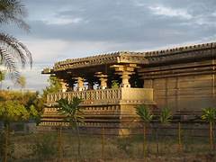
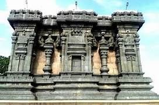
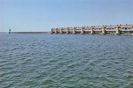
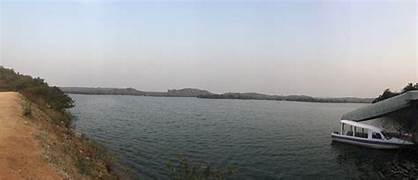
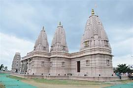

|

Nizamabad Fort |

Dichpally Ramalayam |

Nijam Sagar Dam |
|

Ail Sagar Reservoir |

Uttara Tirupati Kshetram |
Nizamabad Fort, also known as Nizamabad Quilla, is a fort in Nizamabad in the Indian state of Telangana. It was built in 10th century by Rashtrakuta Kings and is situated in the southwest of the city,[1] which is 2 kilometers from Gandhi Chowk.
Dichpally Ramalayam is a Lord Rama temple located in Nizamabad, Telangana built in 14th century by Kakatiya kings. As the temple has a lot of resemblance in its style and structure, it is also called the Indhoor Khajuraho or the Khajuraho of Nizamabad. This is also called Khilla Ramalayam
Nizam Sagar Dam is an Indian dam named after the Nizam of Hyderabad. It is a reservoir constructed across the Manjira River, a tributary of the Godavari River,[1] between Achampet and BanjePally villages of the Kamareddy district in Telangana, India. It is located at about 144 km (89 mi) north-west of Hyderabad. Nizam Sagar is the oldest dam in the state of Telangana.s
Ali Sagar Reservoir is a popular picnic spot in the region ofNizamabad. It was constructed by Nizams of Hyderabad in 1931 and it is a lift irrigation project. The lift canal originates from the back waters of Pochampadu Dam. There is a garden near the reservoir which was developed by the Nizams of Hyderabad.
Uttara Tirupati Kshetram is one of the oldest temples in the locality, located at Nizamabad. It is a very popular temple in the twin cities. Very peaceful and relaxing place and also very holy place. Here the Ananda Laxmi Venkateshwara Swamy is worshipped. The Mula Virat is sculptured as same as the murthi in Tirupati.